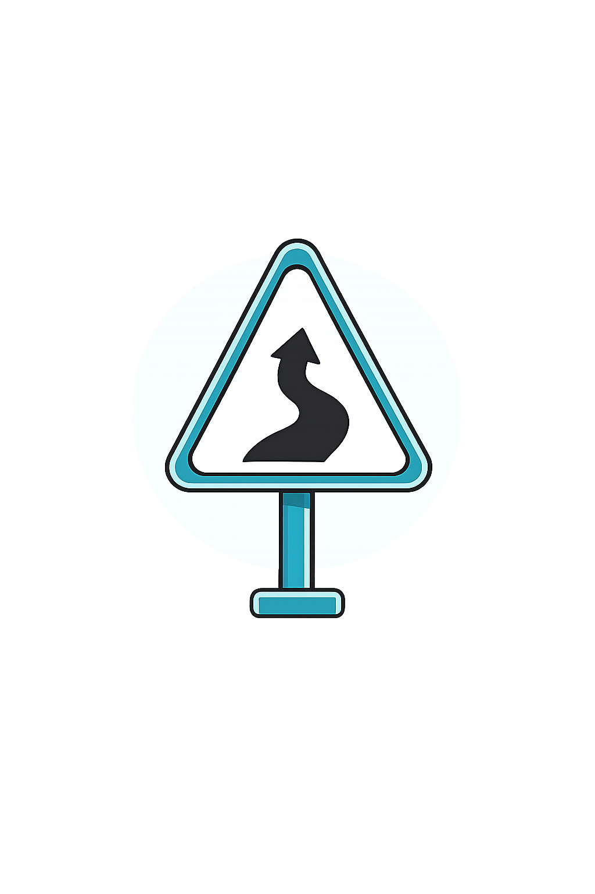

تكنولوجيا القيادة

تعلّم معاني اللوحات المرورية المختلفة، وكيف تساعدك على القيادة الآمنة والالتزام بأنظمة المرور.
تُعد اللوحات المرورية وسيلة أساسية لتنظيم حركة السير، وإرشاد السائقين، وتحذيرهم من المخاطر المحتملة على الطريق. ويساعد فهم معانيها على اتخاذ القرارات الصحيحة أثناء القيادة، والالتزام بأنظمة المرور، وتعزيز السلامة لجميع مستخدمي الطريق.
تكون في الغالب مثلثة الشكل، بخلفية بيضاء ورمز أو رسم باللون الأسود، وإطار باللون الأحمر.
تستخدم لتنبيه السائق إلى وجود خطر أو تغير في الطريق.
تكون في الغالب دائرية الشكل، بخلفية بيضاء ورمز أو رسم باللون الأسود، وإطار باللون الأحمر.
توضح الممنوعات والقيود والقواعد التي يجب التقيد بها.
يستخدم اللون الأزرق في الإشارات التي تتضمن تعليمات أو اتجاهات إلزامية يجب الالتزام بها.
يستخدم اللون الأزرق في اللوحات الإرشادية للدلالة على المدن والقرى والهجر خارج حدود المدن.
يستخدم اللون الأخضر في اللوحات التي تدل على الشوارع والأحياء داخل المدن.
يستخدم اللون الأبيض للدلالة على بعض المرافق والمقاصد المهمة.
يستخدم اللون البني للدلالة على المزارع والأماكن الترفيهية والمتاحف وبعض المواقع الدينية.
تستخدم هذه اللوحات في مواقع أعمال وصيانة الطرق والظروف المؤقتة أو غير العادية على الطريق.
تكون أرضية الإشارة باللون الأصفر، مع إطار أحمر وكتابة أو رسم باللون الأسود.
تنبه السائق إلى وجود خطر أو تغيير في الطريق.
توضح الممنوعات والالتزامات التي يجب التقيد بها.
تساعد السائق على معرفة الاتجاهات والخدمات.
توضح حق الأولوية بين المركبات.
تستخدم في مواقع الصيانة وأعمال الطرق.
فهم اللوحات المرورية يساعد السائق على اتخاذ القرارات الصحيحة أثناء القيادة، والالتزام بالأنظمة، وتقليل احتمالية وقوع الحوادث أو ارتكاب المخالفات.